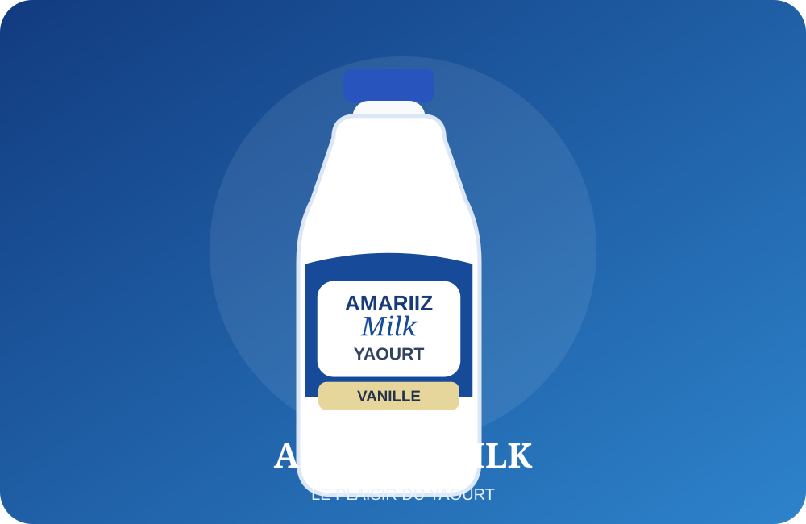

Fabrication et commercialisation de yaourts.
AMARIIZ MILK fabrique et commercialise des yaourts en République démocratique du Congo. Le développement commercial décrit dans le document a progressé de Likasi vers Lubumbashi, puis Kolwezi.
La gamme étudiée comprend des yaourts avec sucre et sans sucre, aux parfums banane et vanille, proposés en petit et grand formats.
LikasiLubumbashiKolwezi
Les informations non communiquées (adresse officielle, coûts, capacités, certifications et coordonnées définitives) ne sont pas inventées ici.